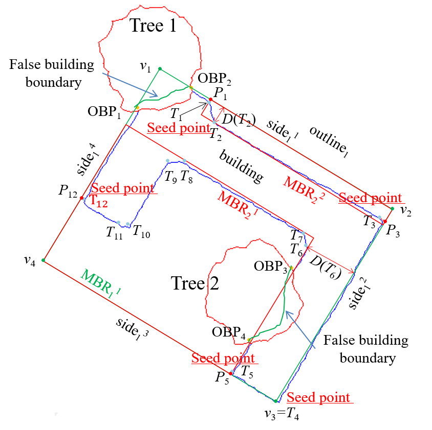

|
Urban Vehicle Extraction from Aerial Laser Scanning Point Cloud Data
Tonggang ZHANG*, Yuhui KAN, Hailong JIA, Chuan DENG, Tingsong XING
International Journal of Remote Sensing, 2020, 41(17), 6664–6697
Full Paper: IJRS ResearchGate
A vehicle extraction method is proposed in this paper to extract vehicles in urban areas more accurately from airborne point clouds. First, the ground points are separated from the non-ground points, and a potential vehicle-occupied area (PVOA) is then extracted from the ground point cloud. A PVOA-based non-ground point cloud segmentation method is proposed in this work, and a gap-based method is put forward to re-cluster the segment, which may include multiple vehicles. The non-ground point cloud is clustered into a series of one-vehicle segments and empty segments. Following this, a shape-based vehicle recognition method is presented that can judge whether or not a given segment is a vehicle using a dynamic time warping similarity measurement. In addition to judging whether or not a segment is a vehicle, the category of each vehicle can also be determined...
|
|  |
An improved minimum bounding rectangle algorithm for regularized building boundary extraction from aerial LiDAR point clouds with partial occlusions
Maolin FENG, Tonggang ZHANG(*), Shichao LI, Guoqing JIN, Yanjun XIA
International Journal of Remote Sensing, 2020, 41(1), 200-219
Full Paper: ResearchGate /
IJRS
In this paper, we propose an improved minimum bounding rectangle (IMBR) algorithm to extract complete and accurate regularized building boundaries with and without partial occlusion from aerial LiDAR point clouds. The new algorithm only uses LiDAR point cloud and doesn't need any additional data source. In addition, the algorithm can be applied to buildings with complex shapes....
|
{kind=link}
{kind=link}